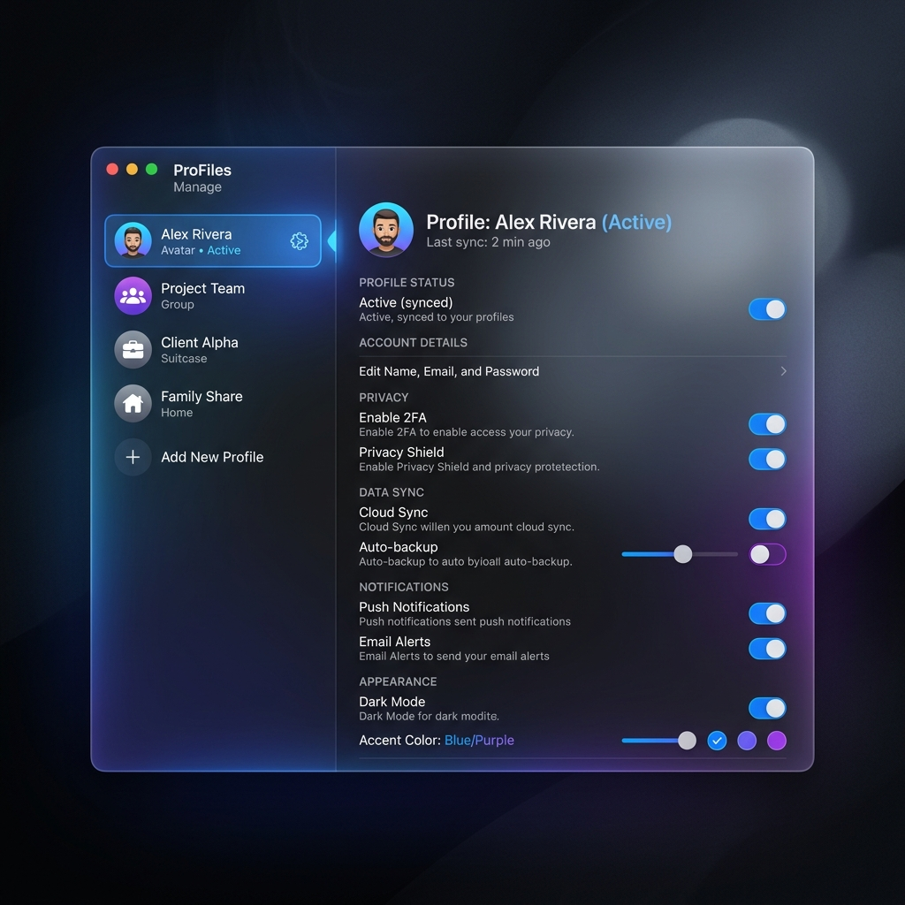
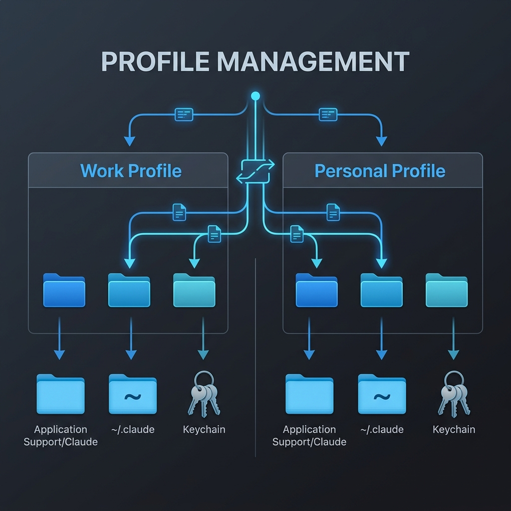

Manage Claude Desktop & CLI Profiles.
Perfectly synced.
The native macOS menu bar utility that manages dedicated data directories for both the Desktop App and the Claude Code (CLI) simultaneously. Switch personal, work, and research contexts effortlessly without burning API tokens.

Independent Profile Directories
Switch effortlessly between personal and work accounts. The app manages dedicated Application Support directories and Keychain credentials for each profile, allowing you to customize what data is independent and what is shared.

Zero Impact
Does not modify global environment variables or break existing setups. Everything runs in sandboxed paths.
Smart Sync
Share global CLAUDE.md rules and installed plugins across profiles while keeping conversations strictly isolated.
Built for efficiency.
No complex setup required. Operates directly from your menu bar.
Install & Launch
Drag to Applications and run. A quiet menu bar icon appears.
Create Contexts
Generate isolated "Work" or "Research" profiles with single clicks.
Switch Seamlessly
Select your active context. The CLI and Desktop app instantly adapt.
User Guide
Detailed instructions on usage, isolation, and synchronization.
1. Installation & Setup
Your existing Claude environment (default personal setup) remains completely untouched.
- Drag and drop the downloaded
ClaudeDesktopSwitcher.appinto your macOS "Applications" folder. - Launch the app. A blue icon will appear in your menu bar.
Creating a New Profile
Create a new isolated environment for work or research. By default, the app enforces "Complete Isolation" to prevent accidental data mixing.
- Click the menu bar icon and select "Settings...".
- Click the "+ Create Profile" button.
- Enter a Name (e.g.,
Work,Research). - Customize configuration (Optional):
- Isolated: Default. Starts from a completely empty, isolated state.
- Shared: Consumes tokens on a separate account while syncing settings (like MCP configurations) from your default environment.
- Click "Create" to save the profile.
2. Daily Workflow
Scenario A: Starting Work on a Dedicated Account
- Click the "Work" profile from the menu bar.
- A new Claude desktop window automatically opens. (Login required on first launch).
Scenario B: Safely Launching the Terminal (Claude Code)
- Ensure the specific Claude desktop window (e.g., your Work environment) is active and in focus.
- Click the official "Open in Terminal" button from within that window.
- Type
claudeto begin. The CLI will automatically run under the work environment context.
Scenario C: Returning to Your Default Environment
To use your normal personal environment, simply launch Claude.app from Spotlight, or open a standard terminal and type claude. It will always default to your original setup.
3. Safety & Zero Impact Guarantee
Claude Desktop Switcher never modifies your system's global environment variables behind the scenes. If you launch Claude without using this app, it will run 100% as your original default environment. There is zero risk of destroying your existing setup.